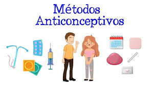

Origen de los embarazos adolescentes
El embarazo adolescente o embarazo precoz es aquel que se produce en una mujer adolescente, entre la adolescencia inicial o pubertad —comienzo de la edad fértil— y el final de la adolescencia. La Organización Mundial de la Salud define la adolescencia entre los 10 y los 19 años. El término también se refiere a las mujeres embarazadas que no han alcanzado la mayoría de edad jurídica.Cada año se registran unos 21 millones de embarazos de adolescentes entre 15 y 19 años. De estos embarazos, el 50% son no deseados y, por lo tanto, se estima una cifra de 12 millones de nacimientos.
Causas de los embarazos en los adolescentes
En lo concerniente al embarazo precoz, la principal causa de que este ocurra es la falta de consciencia y discernimiento de los jóvenes sobre los efectos de tener relaciones a temprana edad, ya que los niños, niñas y adolescentes son personas que se encuentran en una de las “etapas de transición más importantes, que se caracteriza por un ritmo acelerado de crecimiento y de cambios, que viene condicionada por diversos procesos biológicos, donde se da lugar a la maduración física, cognoscitiva y psicosocial.”, afirma la Organización Mundial de la Salud (OMS). El embarazo adolescente tiene raíces profundas, y muchas de ellas están fuertemente atadas a la calidad de vida y a la pobreza de un país
Además de estas, podemos mencionar algunas causas en el ámbito social como ser:
- Sociales
- Personales
- Familiares
Entre los factores familiares asociados al embarazo adolescente están la falta de apoyo familiar, el antecedente familiar de embarazo adolescente y situaciones de violencia y creencias en la familia.
El embarazo en la adolescencia también puede acarrear como consecuencia problemas sociales como la pérdida de autonomía, la interrupción de relaciones sociales, el aplazamiento o estancamiento en el desarrollo personal y el abandono escolar.
Algunas de las causas personales son: Relaciones sexuales sin protección anticonceptiva, Uso inadecuado de métodos anticonceptivos, Inicio sexual temprano, Presión de los pares para tener relaciones sexuales, Educación sexual insuficiente.El embarazo adolescente puede ocurrir por múltiples razones, algunas de ellas son: - Abuso, violación o explotación sexual. - Inequidades en educación con mayor nivel de desescolarización.
Existen diversos factores familiares que favorecen la presencia de embarazo en los adolescentes, en especial aquellos relacionados con la violencia familiar, el vivir junto a los padres, la existencia de una comunicación apropiada con el padre y/o la madre, y el hecho de que puedan consultar a la madre sobre temas de sexualidad.
Complicaciones de un embarazo adolescente
Las complicaciones en un embarazo como este puede llegar a afectar tanto a la madre como al hijo:
- En la madre
- En el hijo
Las madres adolescentes (de 10 a 19 años) tienen mayor riesgo de eclampsia, endometritis puerperal e infecciones sistémicas que las mujeres de 20 a 24 años, y los bebés de madres adolescentes tienen un mayor riesgo de padecer bajo peso al nacer, nacimiento prematuro y afección neonatal grave.
Entre madres adolescentes el 30,9% de los hijos fueron prematuros, y presentaron más patología cardiaca, infecciones bacterianas, sífilis congénita, labio y paladar hendido, y mayor mortalidad
Prevención contra los embarazos en los adolescentes
En lo concerniente al embarazo precoz, la principal causa de que este ocurra es la falta de consciencia y discernimiento de los jóvenes sobre los efectos de tener relaciones a temprana edad, ya que los niños, niñas y adolescentes son personas que se encuentran en una de las “etapas de transición más importantes, que se caracteriza por un ritmo acelerado de crecimiento y de cambios, que viene condicionada por diversos procesos biológicos, donde se da lugar a la maduración física, cognoscitiva y psicosocial.”, afirma la Organización Mundial de la Salud (OMS).
Cuidados de Enfermería
Los cuidados de enfermeria son muy importantes al tener un embarazo adolescente, algunos de ellos son:
- Educación para la salud:
- Apoyo emocional:
- Técnicas de trabajo en familia:
- Preparación psicofísica:
Desarrollar actividades educativas para que la adolescente y su familia aprendan sobre los riesgos del embarazo, el cuidado del recién nacido, la lactancia materna, y el parto.
Brindar apoyo emocional a la adolescente durante este periodo de cambios.
Desarrollar técnicas de trabajo en familia para promover actitudes positivas hacia el bebé y la adolescente.
Preparar a la adolescente psicofísicamente para que tenga un parto tranquilo.